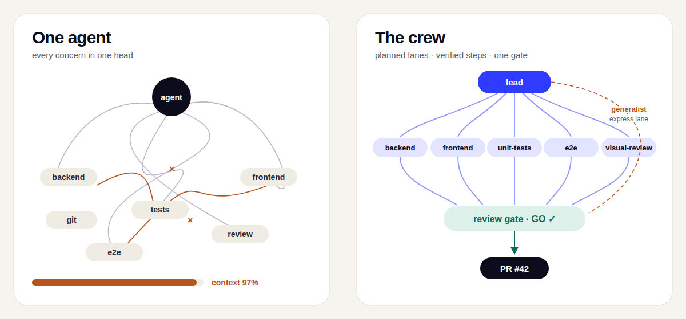

One agent holding a whole feature reviews its own work. crew splits the job the way your team does: a lead that plans and delegates, specialists that know the CMS they work in, and guardrails in code that keep every lane honest until one review gate says go.
$ claude plugin marketplace add johantor/crew $ claude plugin install crew@johantor
One skill per product. The backend specialist reads your EPiServer.CMS version and
loads the matching skill: content model rules, rendering, jobs, caching, security and DXP deploys.
ASP.NET Core PaaS: content types and GUIDs, IContentLoader, rendering, jobs, DXP.
.NET 10: applications, Graph registration, Visual Builder, [ScheduledJob].
The breaking changes, the API replacement map and the ordered upgrade steps.
Sync, the per-type and unified schemas, keys, preview, caching, search and facets.
Content types in code, Visual Builder, live preview and webhooks.
Find on CMS 12: indexing, typed and unified search, facets, and the move to Graph.
ODP events and profiles, identity resolution, and real-time audiences for CMS and Experimentation.
Custom tools in .NET, Node and Python: the discovery contract, registries, auth and the SDK traps.

lead plans, waits for your go-ahead, then delegates each step. It writes no
production code and is the only agent that touches git.
Keeps a written plan with acceptance criteria and commits each step once it passes.
Server code for your stack, with the Optimizely skill for your CMS version.
Views and components, including Razor markup in server-rendered mode.
Backend tests, plus frontend component tests when a tool is configured.
Browser tests with Playwright or Cypress.
Checks the build against the design and names the token, not just the pixel.
Small, low-risk changes across lanes, without the full ceremony.
Traces a production signal to the code and the suspect commits.
Scouts a scope you name and returns ready-to-paste debt pointers.
Or open a claude --agent crew:lead session and just describe the work.
/crew:initOnce per project: record the stack, the build, test and lint commands, and the formatters./crew:featurePlan, delegate, build, and stop at the review gate./crew:reviewGO or NO-GO: code, security and design review, plus build, test and lint./crew:prPush the branch and open the pull request. The only way out of the machine./crew:addressRoute review comments and CI failures back to the crew, then run the gate again./crew:debtFix one debt pointer: a suppression, an analyzer rule, a package upgrade. Beta/crew:triageA bug report, trace or alert → the code and the suspect commits./crew:loopRun the lead again each tick until the plan's exit conditions are met.A prompt is a suggestion to a model. These run in the harness before each tool call, so a worker cannot talk its way past them.
rm, force-push and writes into
.git/ are blocked./crew:pr.